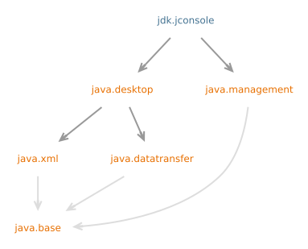

模块 jdk.jconsole
module jdk.jconsole
Defines the JMX graphical tool, jconsole,
for monitoring and managing a running application.
- See Also:
- Using JConsole
- 模块图:

- 工具指南:
- jconsole
- 自:
- 9
{kind=link}
-
包
导出间接导出来源包java.applet java.awt java.awt.color java.awt.desktop java.awt.dnd java.awt.event java.awt.font java.awt.geom java.awt.im java.awt.im.spi java.awt.image java.awt.image.renderable java.awt.print java.beans java.beans.beancontext javax.accessibility javax.imageio javax.imageio.event javax.imageio.metadata javax.imageio.plugins.bmp javax.imageio.plugins.jpeg javax.imageio.plugins.tiff javax.imageio.spi javax.imageio.stream javax.print javax.print.attribute javax.print.attribute.standard javax.print.event javax.sound javax.sound.midi javax.sound.midi.spi javax.sound.sampled javax.sound.sampled.spi javax.swing javax.swing.border javax.swing.colorchooser javax.swing.event javax.swing.filechooser javax.swing.plaf javax.swing.plaf.basic javax.swing.plaf.metal javax.swing.plaf.multi javax.swing.plaf.nimbus javax.swing.plaf.synth javax.swing.table javax.swing.text javax.swing.text.html javax.swing.text.html.parser javax.swing.text.rtf javax.swing.tree javax.swing.undojava.lang.management javax.management javax.management.loading javax.management.modelmbean javax.management.monitor javax.management.openmbean javax.management.relation javax.management.remote javax.management.timerjavax.xml javax.xml.catalog javax.xml.datatype javax.xml.namespace javax.xml.parsers javax.xml.stream javax.xml.stream.events javax.xml.stream.util javax.xml.transform javax.xml.transform.dom javax.xml.transform.sax javax.xml.transform.stax javax.xml.transform.stream javax.xml.validation javax.xml.xpath org.w3c.dom org.w3c.dom.bootstrap org.w3c.dom.events org.w3c.dom.ls org.w3c.dom.ranges org.w3c.dom.traversal org.w3c.dom.views org.xml.sax org.xml.sax.ext org.xml.sax.helpers -
模块
依赖修饰符模块描述transitiveDefines the AWT and Swing user interface toolkits, plus APIs for accessibility, audio, imaging, printing, and JavaBeans.transitiveDefines the Java Management Extensions (JMX) API.间接依赖修饰符模块描述transitiveDefines the API for transferring data between and within applications.transitiveDefines the Java APIs for XML Processing (JAXP). -
服务
使用
Java API 非官方中文翻译项目 · GitHub · 报告此页面的问题或提出改进建议 · 查看完整中文版权声明
中文翻译文本版权 © 2026 本翻译项目贡献者，以 知识共享 署名-相同方式共享 4.0 国际 (CC BY-SA 4.0) 许可证发布。原始英文内容版权归 Oracle 所有，使用受原始许可条款约束。